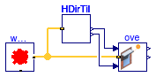
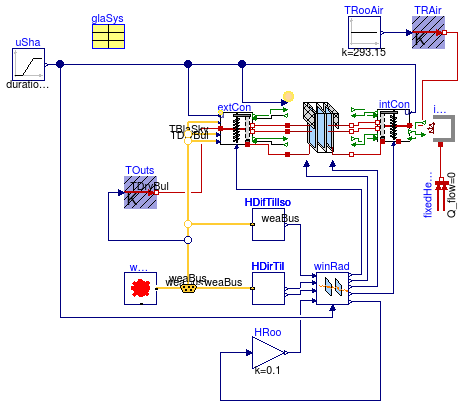

Collection of models that illustrate model use and test models
Information
This package contains examples for the use of models that can be found in
Buildings.HeatTransfer.Windows.
Extends from Modelica.Icons.ExamplesPackage (Icon for packages containing runnable examples).
Package Content
| Name |
Description |
 BoundaryHeatTransfer BoundaryHeatTransfer
|
Test model for the heat transfer at the window boundary condition |
| FixedShade
|
Test model for the fixed shade model |
| Overhang
|
This example tests the window overhang model |
| SideFins
|
This example demonstrates the use of side fins for a window |
 Window Window
|
Test model for the window |
Test model for the heat transfer at the window boundary condition
Information
Extends from Modelica.Icons.Example (Icon for runnable examples).
Parameters
Modelica definition
model BoundaryHeatTransfer
"Test model for the heat transfer at the window boundary condition"
extends Modelica.Icons.Example;
parameter Modelica.SIunits.Area A=1
"Window surface area";
parameter Real fFra=0.2
"Fraction of frame, = frame area divided by total area";
parameter Buildings.HeatTransfer.Data.GlazingSystems.TripleClearAir13ClearAir13Clear
glaSys3(UFra=1)
"Parameters for glazing system";
parameter Buildings.HeatTransfer.Data.GlazingSystems.DoubleClearAir13Clear glaSys(
shade=
Buildings.HeatTransfer.Data.Shades.Gray(),
UFra=1.5,
haveExteriorShade=true,
haveInteriorShade=false)
"Parameters for glazing system";
parameter Buildings.HeatTransfer.Data.GlazingSystems.SingleClear3 glaSys1(UFra=2)
"Parameters for glazing system";
parameter Buildings.HeatTransfer.Data.GlazingSystems.DoubleClearAir13Clear glaSys2(
shade=
Buildings.HeatTransfer.Data.Shades.Gray(),
UFra=2,
haveInteriorShade=false,
haveExteriorShade=false)
"Parameters for glazing system";
parameter Boolean linearizeRadiation = false
"Set to true to linearize emissive power";
Buildings.HeatTransfer.Windows.ExteriorHeatTransfer extCon(A=A, fFra=fFra,
linearizeRadiation=linearizeRadiation,
absIRSha_air=glaSys.shade.absIR_a,
absIRSha_glass=glaSys.shade.absIR_b,
tauIRSha_air=glaSys.shade.tauIR_a,
tauIRSha_glass=glaSys.shade.tauIR_b,
haveExteriorShade=glaSys.haveExteriorShade,
haveInteriorShade=glaSys.haveInteriorShade,
vieFacSky=0.5)
"Exterior convective heat transfer";
Modelica.Blocks.Sources.Constant TOut(y(unit="K"), k=273.15)
"Outside air temperature";
Modelica.Blocks.Sources.Constant TRooAir(k=293.15, y(unit="K"))
"Room air temperature";
Modelica.Blocks.Sources.Ramp uSha(duration=1, startTime=0)
"Shading control signal";
Modelica.Blocks.Sources.Constant vWin(k=1)
"Wind speed";
Buildings.HeatTransfer.Sources.PrescribedTemperature TOuts
"Outside air temperature";
Buildings.HeatTransfer.Sources.PrescribedTemperature TRAir
"Room air temperature";
Buildings.HeatTransfer.Radiosity.IndoorRadiosity radIn(
final linearize=linearizeRadiation,
final A=A)
"Indoor radiosity";
protected
Buildings.HeatTransfer.Radiosity.RadiositySplitter radShaOut
"Radiosity that strikes shading device";
public
Buildings.HeatTransfer.Windows.BaseClasses.ShadingSignal shaSig(haveShade=true)
"Conversion for shading signal";
Buildings.HeatTransfer.Sources.PrescribedTemperature TRAir1
"Room air temperature";
Buildings.HeatTransfer.Sources.PrescribedTemperature TRAir2
"Room air temperature";
Buildings.HeatTransfer.Sources.PrescribedTemperature TRAir3
"Room air temperature";
Modelica.Blocks.Sources.Constant QAbsSW_flow(k=0)
"Absorbed solar radiation";
Modelica.Blocks.Math.MultiSum sumJ(nu=2)
"Sum of radiosity from construction to room model";
equation
connect(uSha.y, extCon.uSha);
connect(TOuts.port, extCon.air);
connect(TRooAir.y, TRAir.T);
connect(extCon.vWin, vWin.y);
connect(TOuts.T, TOut.y);
connect(shaSig.y,radShaOut. u);
connect(radIn.JOut, radShaOut.JIn);
connect(shaSig.u, uSha.y);
connect(radShaOut.JOut_2, extCon.JInUns);
connect(radShaOut.JOut_1, extCon.JInSha);
connect(radIn.heatPort, TRAir.port);
connect(TRooAir.y, TRAir1.T);
connect(TRooAir.y, TRAir2.T);
connect(TRooAir.y, TRAir3.T);
connect(TRAir1.port, extCon.glaUns);
connect(TRAir2.port, extCon.glaSha);
connect(TRAir3.port, extCon.frame);
connect(TOut.y, extCon.TBlaSky);
connect(TOut.y, extCon.TOut);
connect(radIn.JIn, sumJ.y);
connect(extCon.JOutUns, sumJ.u[1]);
connect(extCon.JOutSha, sumJ.u[2]);
connect(QAbsSW_flow.y, extCon.QSolAbs_flow);
end BoundaryHeatTransfer;
Test model for the fixed shade model

Information
This model tests window overhang and side fins. There are four instances of sha.
The first instance models an overhang only, the second models side fins and
an overhang, the third models side fins only and the fourth has neither an overhang
nor a side fin.
Extends from Modelica.Icons.Example (Icon for runnable examples).
Parameters
Modelica definition
model FixedShade
"Test model for the fixed shade model"
extends Modelica.Icons.Example;
Buildings.HeatTransfer.Windows.FixedShade sha[4](
final conPar=conPar,
azi=conPar.azi,
each lat=weaDat.lat)
"Shade model";
Buildings.BoundaryConditions.WeatherData.ReaderTMY3 weaDat(
filNam="modelica://Buildings/Resources/weatherdata/USA_IL_Chicago-OHare.Intl.AP.725300_TMY3.mos");
Buildings.BoundaryConditions.SolarIrradiation.DirectTiltedSurface HDirTil(
lat=weaDat.lat,
til=Buildings.Types.Tilt.Wall,
azi=Buildings.Types.Azimuth.S)
"Direct solar irradiation";
Modelica.Blocks.Routing.Replicator H(nout=4)
"Replicator";
Modelica.Blocks.Routing.Replicator incAng(nout=4)
"Replicator";
parameter Buildings.Rooms.BaseClasses.ParameterConstructionWithWindow conPar[4](
each til=Buildings.Types.Tilt.Wall,
each azi=Buildings.Types.Azimuth.S,
each A=20,
each hWin=1.5,
each wWin=2,
each glaSys=glaSys,
each layers=insCon,
ove(
wR = {0.1, 0.1, 0, 0},
wL = {0.1, 0.1, 0, 0},
gap= {0.1, 0.1, 0, 0},
dep= {1, 1, 0, 0}),
sidFin(
dep= {0, 1, 1, 0},
gap= {0, 0.1, 0.1, 0},
h = {0, 0.1, 0.1, 0}))
"Construction parameters";
parameter Buildings.HeatTransfer.Data.GlazingSystems.DoubleClearAir13Clear glaSys
"Glazing system";
parameter Data.OpaqueConstructions.Insulation100Concrete200 insCon
"Insulation and concrete material";
equation
connect(weaDat.weaBus, sha[1].weaBus);
connect(weaDat.weaBus, sha[2].weaBus);
connect(weaDat.weaBus, sha[3].weaBus);
connect(HDirTil.weaBus, weaDat.weaBus);
connect(HDirTil.H, H.u);
connect(HDirTil.inc, incAng.u);
connect(incAng.y,sha. incAng);
connect(H.y,sha. HDirTilUns);
connect(weaDat.weaBus, sha[4].weaBus);
end FixedShade;
This example tests the window overhang model

Information
This example demonstrates the use of the overhang model.
It calculates the fraction of total window area that is exposed to the sun.
A similar example of an overhang model with more basic components is implemented in
Buildings.HeatTransfer.Windows.BaseClasses.Examples.Overhang.
Extends from Modelica.Icons.Example (Icon for runnable examples).
Modelica definition
model Overhang
"This example tests the window overhang model"
extends Modelica.Icons.Example;
Buildings.BoundaryConditions.WeatherData.ReaderTMY3 weaDat(filNam="modelica://Buildings/Resources/weatherdata/USA_IL_Chicago-OHare.Intl.AP.725300_TMY3.mos")
"Weather data";
Buildings.HeatTransfer.Windows.Overhang ove(
dep=1.2,
gap=0.1,
hWin=1.0,
wWin=1.0,
azi=Buildings.Types.Azimuth.S,
wR=0.1,
wL=0.1,
lat=weaDat.lat)
"Calculates fraction of window area exposed to the sun";
Buildings.BoundaryConditions.SolarIrradiation.DirectTiltedSurface HDirTil(
lat=weaDat.lat,
til=Buildings.Types.Tilt.Wall,
azi=Buildings.Types.Azimuth.S)
"Direct solar irradiation";
equation
connect(weaDat.weaBus, ove.weaBus);
connect(HDirTil.weaBus, weaDat.weaBus);
connect(HDirTil.inc, ove.incAng);
connect(HDirTil.H, ove.HDirTilUns);
end Overhang;
This example demonstrates the use of side fins for a window

Information
This example uses the window sidefin model to calculate the fraction of total window area exposed to the sun.
For a detailed description of the model, see
Buildings.HeatTransfer.Windows.SideFins.
A similar example of can be found in
Buildings.HeatTransfer.Windows.BaseClasses.Examples.SideFins.
Extends from Modelica.Icons.Example (Icon for runnable examples).
Modelica definition
model SideFins
"This example demonstrates the use of side fins for a window"
extends Modelica.Icons.Example;
Buildings.BoundaryConditions.WeatherData.ReaderTMY3 weaDat(
filNam="modelica://Buildings/Resources/weatherdata/USA_IL_Chicago-OHare.Intl.AP.725300_TMY3.mos")
"Weather data";
Buildings.HeatTransfer.Windows.SideFins fin(
h=0.2,
hWin=1.0,
wWin=1.0,
dep=0.5,
gap=0.1)
"Outputs fraction of window area exposed to the sun";
Buildings.BoundaryConditions.SolarIrradiation.DirectTiltedSurface HDirTil(
lat=weaDat.lat,
til=Buildings.Types.Tilt.Wall,
azi=Buildings.Types.Azimuth.S)
"Direct solar irradiation";
equation
connect(weaDat.weaBus, fin.weaBus);
connect(HDirTil.weaBus, weaDat.weaBus);
connect(HDirTil.inc, fin.incAng);
connect(HDirTil.H, fin.HDirTilUns);
end SideFins;
Test model for the window

Information
This model demonstrates the implementation of a window model.
On the left hand side is a model for the combined convective and radiative heat
transfer on the outside facing side of the window.
In the top middle is the window model, and below is a model that
computes the solar radiation balance of the window. Output of the solar
radiation balance model are the absorbed solar heat flow rates, which are
input to the heat balance models.
On the right hand side are models for the inside surface heat balance.
As opposed to the outside surface heat balance models, these models are
implemented using separate components for the radiative balance and for the convective
balance. This has been done to allow separating radiation from convection,
which is required when the room model is used with room air heat balance models
that use computational fluid dynamics.
Extends from Modelica.Icons.Example (Icon for runnable examples).
Parameters
| Type | Name | Default | Description |
|---|
| Area | A | 1 | Window surface area [m2] |
| Real | fFra | 0.2 | Fraction of frame, = frame area divided by total area |
| Boolean | linearize | false | Set to true to linearize emissive power |
| Angle | lat | 0.34906585039887 | Latitude [rad] |
| Angle | azi | 0 | Surface azimuth [rad] |
| Angle | til | 1.5707963267949 | Surface tilt [rad] |
| DoubleClearAir13Clear | glaSys | | |
Connectors
| Type | Name | Description |
|---|
| Bus | weaBus | |
Modelica definition
model Window
"Test model for the window"
extends Modelica.Icons.Example;
parameter Modelica.SIunits.Area A=1
"Window surface area";
parameter Real fFra=0.2
"Fraction of frame, = frame area divided by total area";
final parameter Modelica.SIunits.Area AFra = fFra * A
"Frame area";
final parameter Modelica.SIunits.Area AGla = A-AFra
"Glass area";
parameter Boolean linearize = false
"Set to true to linearize emissive power";
parameter Modelica.SIunits.Angle lat=0.34906585039887
"Latitude";
parameter Modelica.SIunits.Angle azi=0
"Surface azimuth";
parameter Modelica.SIunits.Angle til=1.5707963267949
"Surface tilt";
Buildings.HeatTransfer.Windows.Window window(
A=A,
fFra=fFra,
glaSys=glaSys,
linearize=linearize,
til=til)
"Window";
Buildings.HeatTransfer.Windows.ExteriorHeatTransfer extCon(
A=A,
fFra=fFra,
linearizeRadiation=linearize,
absIRSha_air=glaSys.shade.absIR_a,
absIRSha_glass=glaSys.shade.absIR_b,
tauIRSha_air=glaSys.shade.tauIR_a,
tauIRSha_glass=glaSys.shade.tauIR_b,
haveExteriorShade=glaSys.haveExteriorShade,
haveInteriorShade=glaSys.haveInteriorShade,
vieFacSky=0.5)
"Exterior convective heat transfer";
Modelica.Blocks.Sources.Ramp uSha(duration=0.5, startTime=0.25)
"Shading control signal";
Buildings.HeatTransfer.Sources.PrescribedTemperature TOuts
"Outside air temperature";
Buildings.HeatTransfer.Sources.FixedTemperature TRAir(T=293.15)
"Room air temperature";
Buildings.HeatTransfer.Radiosity.IndoorRadiosity indRad(A=A)
"Model for indoor radiosity";
Buildings.HeatTransfer.Sources.FixedHeatFlow fixedHeatFlow(Q_flow=0);
parameter Buildings.HeatTransfer.Data.GlazingSystems.DoubleClearAir13Clear glaSys(
shade=
Buildings.HeatTransfer.Data.Shades.Gray(),
haveExteriorShade=false,
haveInteriorShade=true);
Buildings.BoundaryConditions.SolarIrradiation.DirectTiltedSurface HDirTil(
til=til,
lat=lat,
azi=azi);
Buildings.BoundaryConditions.SolarIrradiation.DiffuseIsotropic HDifTilIso(
til=til);
Buildings.BoundaryConditions.WeatherData.ReaderTMY3 weaDat(
filNam="modelica://Buildings/Resources/weatherdata/USA_IL_Chicago-OHare.Intl.AP.725300_TMY3.mos");
Modelica.Blocks.Math.Gain HRoo(k=0.1)
"Solar irradiation from room";
Buildings.HeatTransfer.Windows.BaseClasses.WindowRadiation winRad(
AWin=1,
N=
size(glaSys.glass, 1),
tauGlaSol=glaSys.glass.tauSol,
rhoGlaSol_a=glaSys.glass.rhoSol_a,
rhoGlaSol_b=glaSys.glass.rhoSol_b,
xGla=glaSys.glass.x,
tauShaSol_a=glaSys.shade.tauSol_a,
tauShaSol_b=glaSys.shade.tauSol_b,
rhoShaSol_a=glaSys.shade.rhoSol_a,
rhoShaSol_b=glaSys.shade.rhoSol_b,
haveExteriorShade=glaSys.haveExteriorShade,
haveInteriorShade=glaSys.haveInteriorShade);
Buildings.BoundaryConditions.WeatherData.Bus weaBus;
Buildings.HeatTransfer.Windows.BaseClasses.ShadeRadiation intShaRad(
thisSideHasShade=glaSys.haveInteriorShade,
linearize=linearize,
absIR_air=glaSys.shade.absIR_a,
absIR_glass=glaSys.shade.absIR_b,
tauIR_air=glaSys.shade.tauIR_a,
tauIR_glass=glaSys.shade.tauIR_b,
A=AGla)
if
glaSys.haveShade
"Interior shade radiation model";
Buildings.HeatTransfer.Windows.BaseClasses.ShadingSignal shaSig(
haveShade=glaSys.haveInteriorShade)
"Conversion for shading signal";
Buildings.HeatTransfer.Windows.InteriorHeatTransferConvective intShaCon(
A=A,
fFra=fFra,
til=Buildings.Types.Tilt.Wall,
haveExteriorShade=glaSys.haveExteriorShade,
haveInteriorShade=glaSys.haveInteriorShade)
"Model for interior shade heat transfer";
protected
Modelica.Blocks.Math.Sum sumJ(nin=
if glaSys.haveShade
then 2
else 1)
"Sum of radiosity fom glass to outside";
Buildings.HeatTransfer.Radiosity.RadiositySplitter radShaOut
"Radiosity that strikes shading device";
equation
connect(uSha.y, extCon.uSha);
connect(uSha.y, window.uSha);
connect(TOuts.port, extCon.air);
connect(window.glaUns_a, extCon.glaUns);
connect(window.glaSha_a, extCon.glaSha);
connect(window.fra_a, extCon.frame);
connect(extCon.JOutUns, window.JInUns_a);
connect(extCon.JInUns, window.JOutUns_a);
connect(extCon.JOutSha, window.JInSha_a);
connect(extCon.JInSha, window.JOutSha_a);
connect(fixedHeatFlow.port, indRad.heatPort);
connect(winRad.QTra_flow,HRoo. u);
connect(HRoo.y,winRad. HRoo);
connect(HDifTilIso.H, winRad.HDif);
connect(HDirTil.H, winRad.HDir);
connect(HDirTil.inc, winRad.incAng);
connect(winRad.QAbsGlaUns_flow, window.QAbsUns_flow);
connect(winRad.QAbsGlaSha_flow, window.QAbsSha_flow);
connect(weaDat.weaBus, weaBus);
connect(weaBus, HDirTil.weaBus);
connect(HDifTilIso.weaBus, weaBus);
connect(TOuts.T, weaBus.TDryBul);
connect(uSha.y, winRad.uSha);
connect(weaBus.winSpe, extCon.vWin);
connect(weaBus.TBlaSky, extCon.TBlaSky);
connect(weaBus.TDryBul, extCon.TOut);
connect(uSha.y, shaSig.u);
connect(intShaRad.u, shaSig.y);
connect(indRad.JOut, radShaOut.JIn);
connect(radShaOut.JOut_1, intShaRad.JIn_air);
connect(indRad.JIn, sumJ.y);
connect(sumJ.u[2], intShaRad.JOut_air);
connect(window.JOutUns_b, sumJ.u[1]);
connect(intShaRad.JOut_glass, window.JInSha_b);
connect(window.JInUns_b, radShaOut.JOut_2);
connect(radShaOut.u, shaSig.y);
connect(intShaRad.JIn_glass, window.JOutSha_b);
connect(TRAir.port, intShaCon.air);
connect(uSha.y, intShaCon.uSha);
connect(intShaCon.TSha, intShaRad.TSha);
connect(window.fra_b, intShaCon.frame);
connect(window.glaUns_b, intShaCon.glaUns);
connect(intShaCon.glaSha, window.glaSha_b);
connect(intShaCon.QRadAbs_flow, intShaRad.QRadAbs_flow);
connect(winRad.QAbsIntSha_flow, intShaRad.QSolAbs_flow);
connect(winRad.QAbsExtSha_flow, extCon.QSolAbs_flow);
end Window;
Automatically generated Mon Jul 13 14:26:42 2015.
 Buildings.HeatTransfer.Windows.Examples.Window
Buildings.HeatTransfer.Windows.Examples.Window